mkdocs-with-pdf
mkdocs-with-pdfを使用して、ドキュメントをPDFとして出力することができます。
環境構築
WeasyPrintに依存してるので、事前に環境構築が必要。
https://doc.courtbouillon.org/weasyprint/latest/first_steps.html#linux
インストールする。
プラグインを有効にする。
表紙をつける
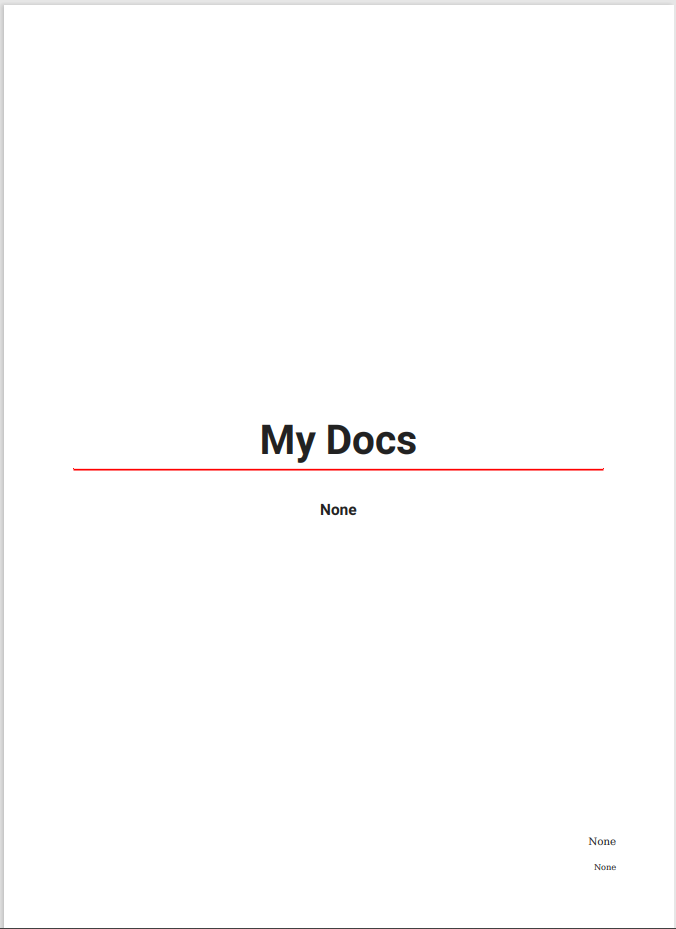
表紙をカスタマイズする
表紙用のHTMLを差し込むことができます。
custom_template_pathで指定したディレクトリー内に、cover.htmlを配置します。
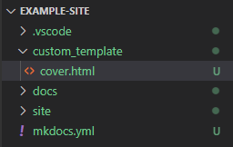
<!-- 表紙 -->
<div style="background-color: steelblue; padding: 0.5em;">
<h1 style="color: white;">MKDoc</h1>
</div>
デフォルトで余白が設定されているので、帯状に塗りつぶしたい場合、marginをマイナスに設定して描画領域を調整します。
<!-- 表紙 -->
<div style="background-color: steelblue; padding: 0.5em 0.5em 0.5em 3.5em; margin: 0 -3em;">
<h1 style="color: white;">MKDocs</h1>
</div>
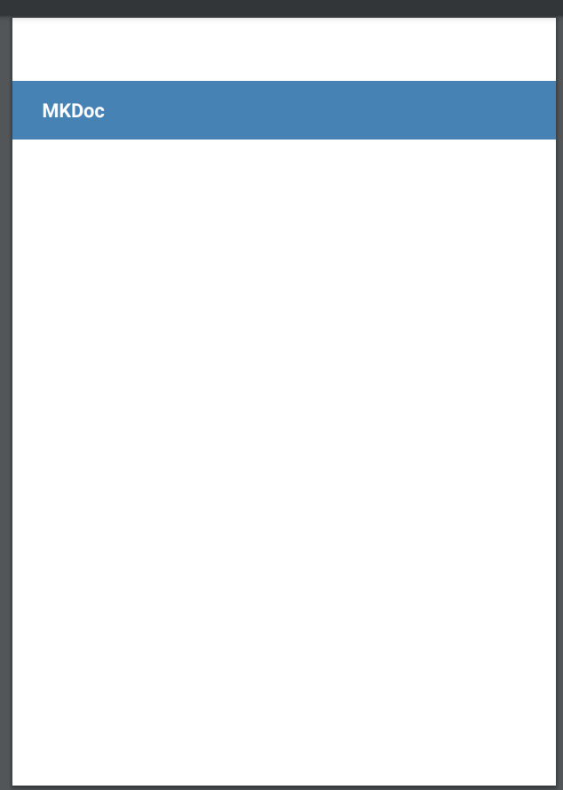
表紙の次に注意書き等のページを差し込む
cover.html 内で改ページを指定することで、2ページ以降にも任意のページを差し込むことができます。
<!-- 表紙 -->
<div style="background-color: steelblue; padding: 0.5em 0.5em 0.5em 3.5em; margin: 0 -3em;">
<h1 style="color: white;">MKDocs</h1>
</div>
<!-- 注意書き -->
<div style="page-break-before: always;">
<h1>はじめに</h1>
<span>注意書き等～～～～～</span>
</div>
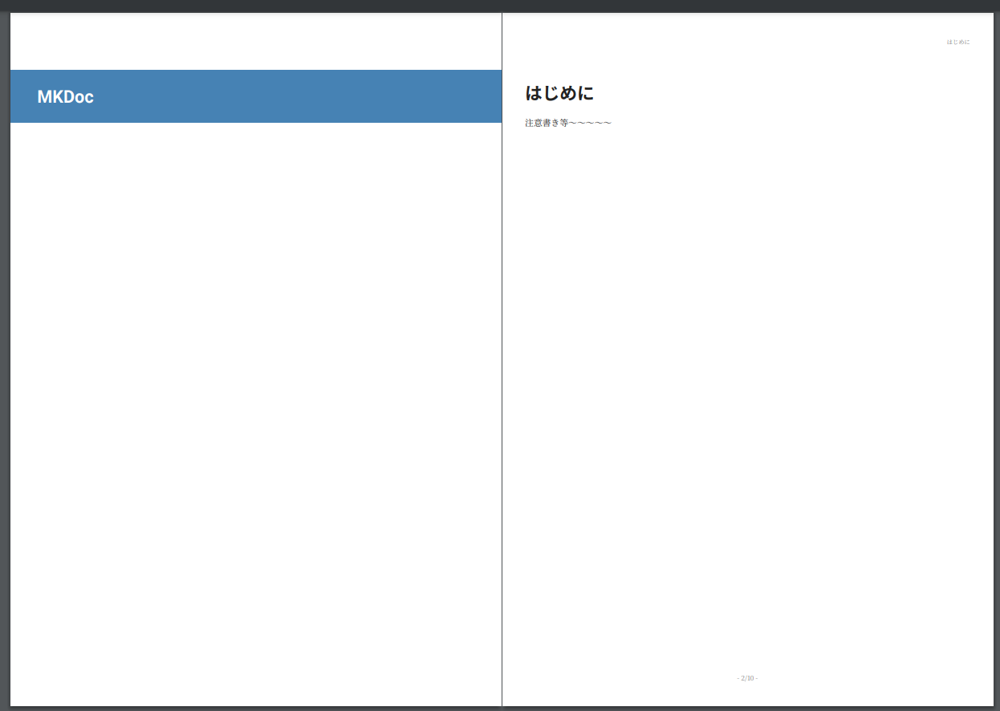
PDF出力用のスタイルシートを指定する
custom_template_pathで指定したディレクトリー内に、styles.scssを配置します。
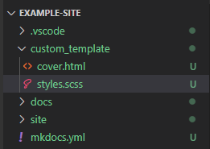
見出しのボーダーカラーを変更する
テーマを指定するようなオプションはないので、styles.scss内でスタイルを指定します。
$mainColor: #177e7e;
$subColor: rgba($mainColor, 0.85);
article {
h1 {
border-bottom: 2px solid $mainColor !important;
}
h2 {
border-bottom: 1px solid $subColor !important;
}
h3 {
border-bottom: 0.5px solid #eee;
}
h1>.pdf-order,
h2>.pdf-order,
h3>.pdf-order {
padding-left: 6px;
}
}
.pdf-order {
color: $mainColor !important;
}
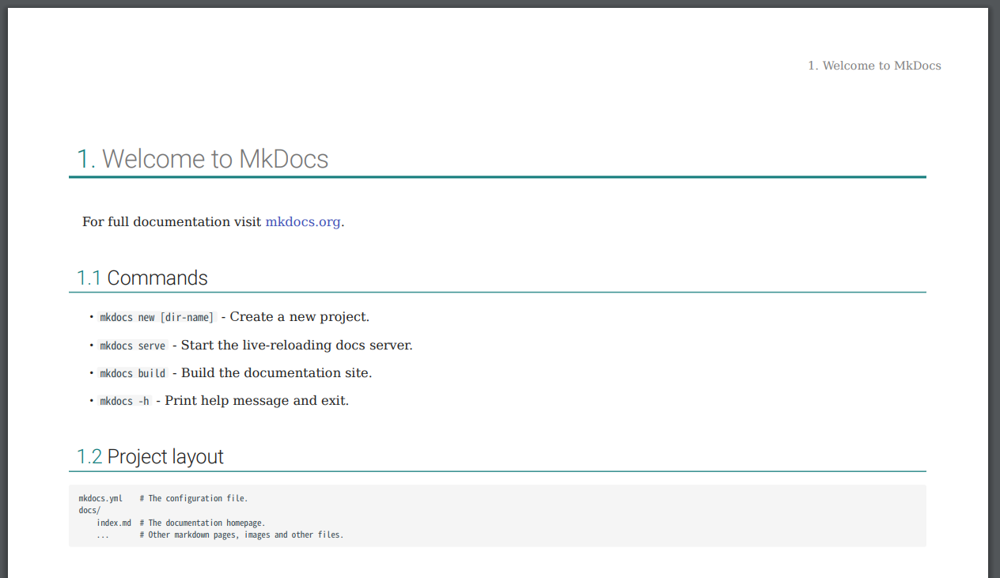
目次へ出力する見出しレベルを指定する
目次へ出力する見出しのレベルを指定することができます。
toc_level: 3にすることで、見出しレベルが３（###）の項まで目次へ出力されます。
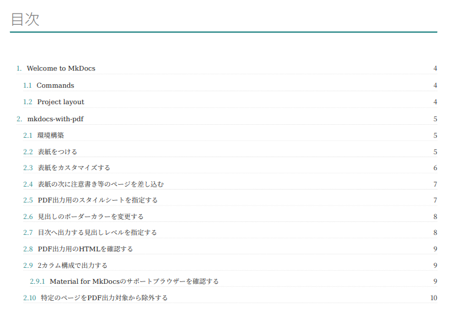
PDF出力用のHTMLを確認する
スタイルを拡張する際、要素の構造や、属性等確認したい場合があります。
オプションをdebug_html: trueとすることで、PDF出力用のHTMLがログ出力されるようになります。
pretty-print等のオプションはないので、htmlとして書き出し、フォーマットをかけて確認するとわかりやすいです。
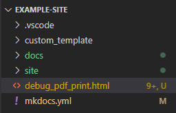
見出しへ付与されたアンカーを確認したい場合は、show_anchors: trueとすることで、ログへ一覧が出力されます。
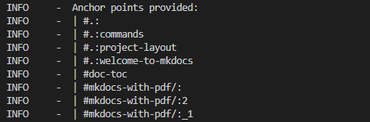
2カラム構成で出力する
２カラム構成で出力する見出しレベルを指定することで、そのレベル以下は２カラムで出力されるようになります。
Material for MkDocsのサポートブラウザーを確認する
この項は、見出しレベルが３（###）なので、２カラム構成で出力されます。
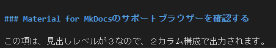
Material for MkDocsの製品サイトへアクセスします。
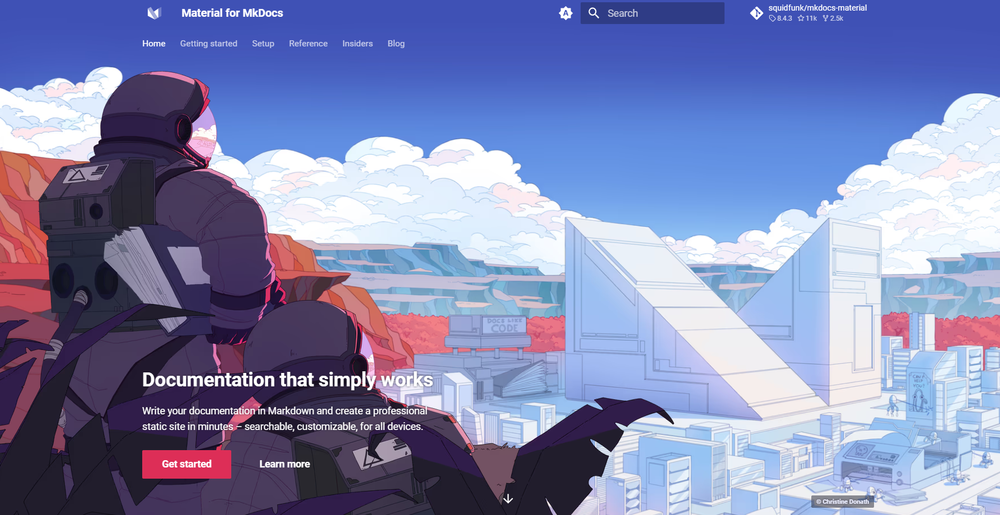
Getting startedをクリックします。
左側のメニューからBrowser supportへ移動します。
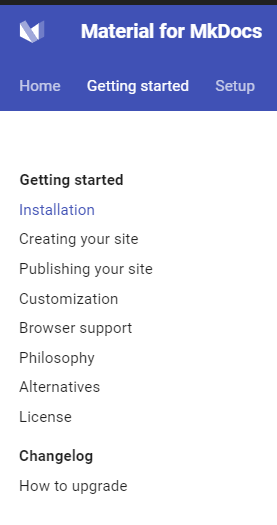
対応ブラウザーと各バージョンを確認します。
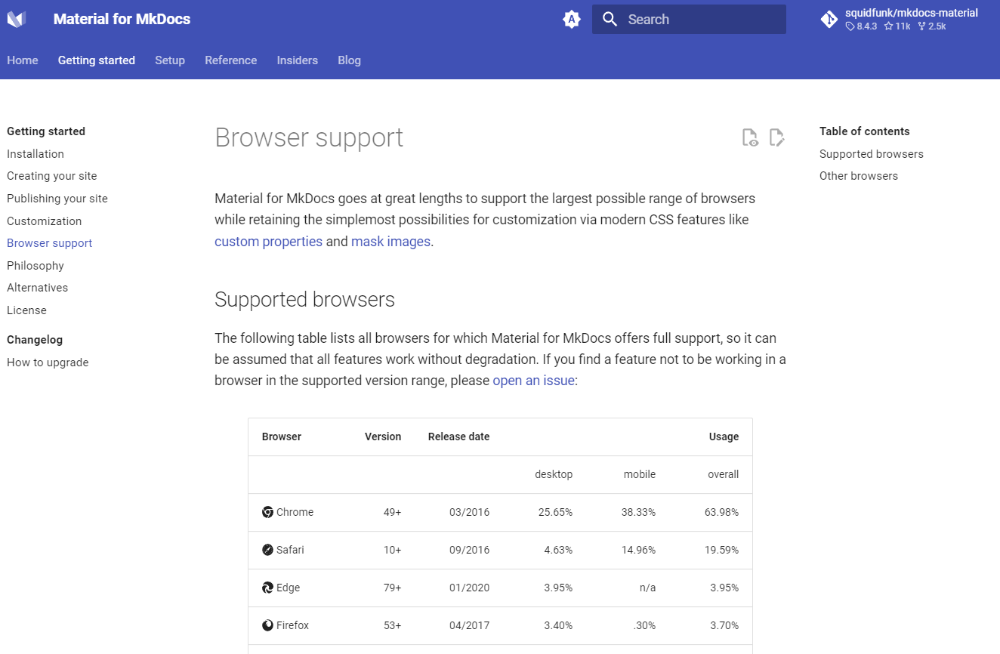
こんな感じのちょっとしたフローは２カラム構成のほうが無駄なスペースを消費せず見やすい。
特定のページをPDF出力対象から除外する
オプションで、除外したいファイル/ディレクトリを指定します。
MkDocsのオプションでuse_directory_urls: falseとしている場合
MkDocsのオプションでuse_directory_urls: trueとしている場合
各ページにロゴを表示する
特にオプションはないので、スタイルで指定します。
CSS Paged Media Module Level 3
styles.scss
@page:first {
@top-left {
content: '';
}
}
@page {
@top-left {
opacity: .6;
transform: translateX(-150px) scale(0.3);
content: url(data:image/png;base64,・・・・・);
}
}
表紙をのぞいた各ページの左上にロゴが表示されます。
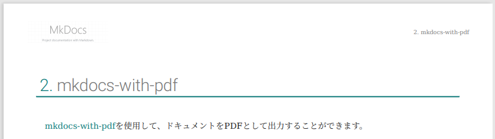
裏表紙をつける・カスタマイズする
裏表紙用のHTMLを差し込むことができます。
オプションでback_cover: trueを設定し、custom_template_pathで指定したディレクトリー内に、back_cover.htmlを配置します。
back_cover.html
不要な情報があればスタイルで無効化します。
styles.scss
.back-cover-page {
page: back-page;
page-break-before: always;
}
@page back-page {
@top-right {
content: none;
}
@top-left {
content: none;
}
@bottom-center {
content: none;
}
@bottom-right {
content: none;
}
}
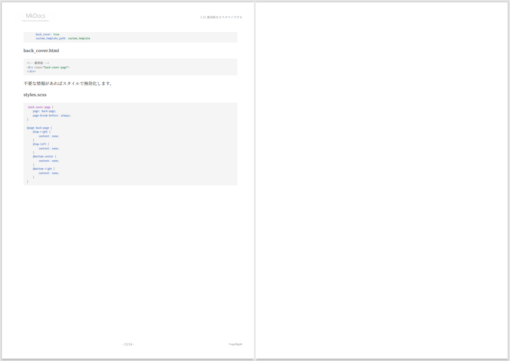
イベントフック
mkdocs.ymlと同一ディレクトリーに、pdf_event_hook.pyを配置して、PDF出力時に以下処理をフックして処理を拡張することができます。
def inject_link(html: str, href: str, page: Page, logger: logging) -> str:
def pre_js_render(soup: BeautifulSoup, logger: logging) -> BeautifulSoup:
def pre_pdf_render(soup: BeautifulSoup, logger: logging) -> BeautifulSoup:
裏表紙下部へ、出力時の情報を出力してみます。
import logging
import sys
import datetime
from bs4 import BeautifulSoup
from mkdocs.structure.pages import Page
def pre_pdf_render(soup: BeautifulSoup, logger: logging) -> BeautifulSoup:
logger.info('(hook on pre_pdf_render)')
for el in soup.select('.back-cover-page'):
logger.info(el)
el_main = soup.new_tag('main')
el_main['style'] = 'flex: 1;'
el.append(el_main)
el_output_info = soup.new_tag('footer')
el_output_info['style'] = 'color: gray; font-size: 0.9em;'
# Pythonバージョン
el_python_version = soup.new_tag('div')
el_python_version.string = 'Python version: ' + sys.version
el_output_info.append(el_python_version)
# 出力日時
el_current_dt = el_python_version = soup.new_tag('div')
el_current_dt.string = '出力日時: ' + datetime.datetime.now().strftime('%Y年%m月%d日 %H:%M:%S')
el_output_info.append(el_current_dt)
el.append(el_output_info)
break
return soup
styles.scss
.back-cover-page {
page: back-page;
page-break-before: always;
height: 100%;
display: flex;
flex-flow: column;
}